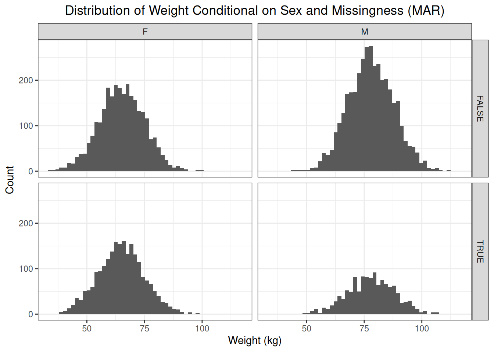
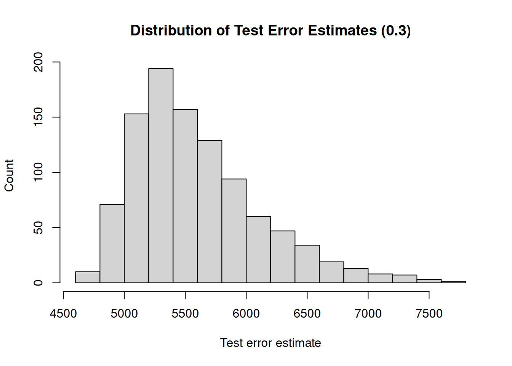
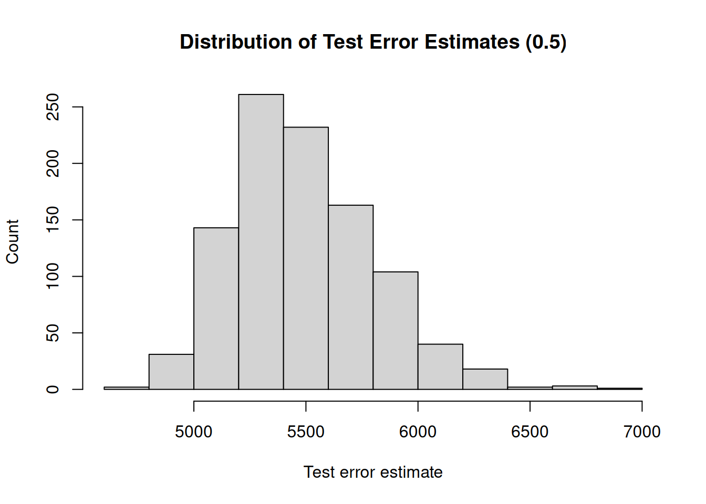
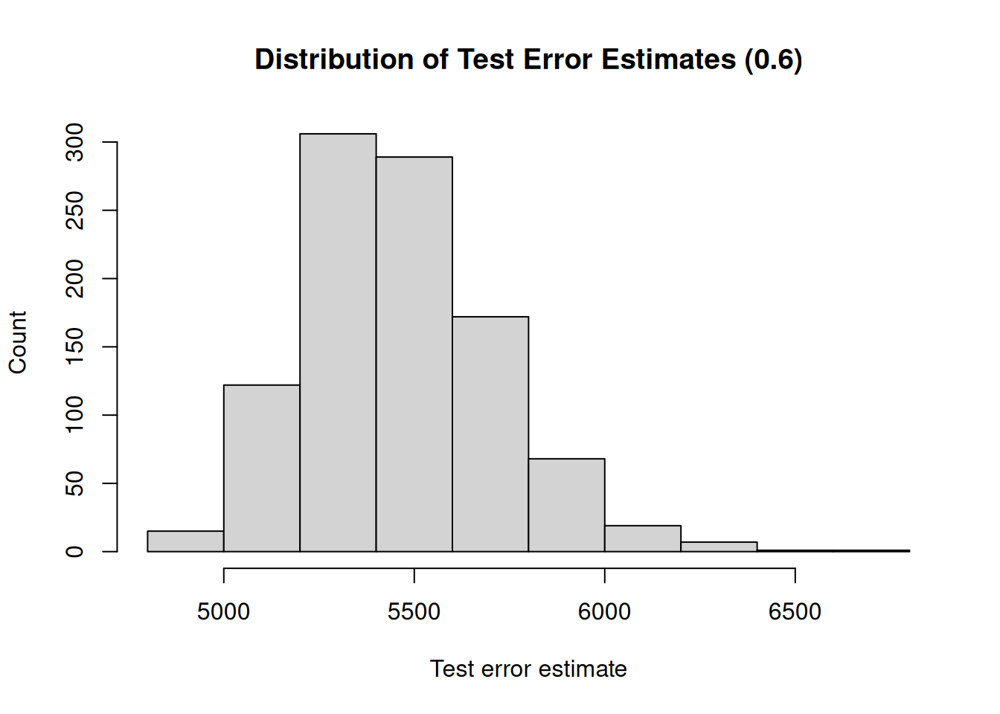

3 Validation
We use the brains data set sourced from:
https://www.kaggle.com/datasets/anubhabswain/brain-weight-in-humans
# Read the data set into R
brains <- readr::read_csv(
file = "data/brains.csv",
show_col_types = FALSE,
col_names = c("sex", "age", "head_volume", "brain_weight"),
skip = 1
)
# Get the sample size
n <- nrow(brains)The coding is as follows:
sex: 1 = male, 2 = femaleage: 1 = older than 18 years, 2 = younger than 18 yearshead_volume: volume of the head in cubic centimetersbrain_weight: weight of the brain in grams.
3.1 Validation Set Approach
The complete set of observations is randomly split into two parts: a training set and a validation set (test set, hold-out set). The model is fit to the training set and the performance of the model is assessed using the validation set. More specifically, the validation set is used to estimate the test error rate. For this, we calculate the mean squared error:
\[ MSE = E(Y_i - \hat{Y_i}) = \frac{1}{n} \sum_{i = 1}^{n}(Y_i - \hat{Y_i}) \]
We start by randomly splitting the data set into two parts. Approximately 80% of the observations are used as training observations, and the other 20% are used as test observations.
# Randomly split the data set into a training set (80%) and a test set (20%)
set.seed(123)
trn <- sample(n, round(0.80*n))
tst <- (1:n)[-trn]# Fit the model to the training set
fit <- glm(
formula = brain_weight ~ head_volume,
data = brains,
subset = trn
)##
## Call:
## glm(formula = brain_weight ~ head_volume, data = brains, subset = trn)
##
## Coefficients:
## Estimate Std. Error t value Pr(>|t|)
## (Intercept) 329.06934 49.82949 6.604 3.99e-10 ***
## head_volume 0.26237 0.01359 19.302 < 2e-16 ***
## ---
## Signif. codes: 0 '***' 0.001 '**' 0.01 '*' 0.05 '.' 0.1 ' ' 1
##
## (Dispersion parameter for gaussian family taken to be 4712.825)
##
## Null deviance: 2641859 on 189 degrees of freedom
## Residual deviance: 886011 on 188 degrees of freedom
## AIC: 2150.2
##
## Number of Fisher Scoring iterations: 2We calculate the MSE using the test observations as an estimate of the test error rate.
# Calculate the mean squared error using the observations from the test set
obs_brain_weight <- brains$brain_weight
prd_brain_weight <- predict(fit, brains)
prd_errors <- (obs_brain_weight - prd_brain_weight)[tst]
test_error <- mean(prd_errors**2)
test_error## [1] 7378.2983.1.1 Variability of MSE
Note that the creation of a training set and a test set is a random process, and therefore the estimate of the test error is also a random measure. If we use another split of the data set, we obtain a different estimate of the test error.
# Randomly split the data set into a training set (80%) and a test set (20%)
set.seed(456)
trn <- sample(n, round(0.80*n))
tst <- (1:n)[-trn]
# Fit the model to the training set
fit <- glm(
formula = brain_weight ~ head_volume,
data = brains,
subset = trn
)
# Calculate the mean squared error using the observations from the test set
obs_brain_weight <- brains$brain_weight
prd_brain_weight <- predict(fit, brains)
prd_errors <- (obs_brain_weight - prd_brain_weight)[tst]
test_error <- mean(prd_errors**2)
test_error## [1] 6837.111To assess the variability of the test error estimates, we repeatedly split the set of observations into a training set and a test set and compute the MSE.
# Repeatedly calculate the test error estimate on random splits of the data
set.seed(123)
sim_size <- 1000
test_errors <- rep(NA, times = sim_size)
for (i in 1:sim_size) {
# Randomly split the data set into a training set (80%) and a test set (20%)
trn <- sample(n, round(0.80*n))
tst <- (1:n)[-trn]
# Fit the model to the training set
fit <- glm(
formula = brain_weight ~ head_volume,
data = brains,
subset = trn
)
# Calculate the mean squared error using the observations from the test set
obs_brain_weight <- brains$brain_weight
prd_brain_weight <- predict(fit, brains)
prd_errors <- (obs_brain_weight - prd_brain_weight)[tst]
test_errors[i] <- mean(prd_errors**2)
}
We see that there is quite some variability in the test error estimates, where they range from 2176.14 to 8905.89. This is a serious drawback of the validation set approach, and therefore it is recommended to use other methods to assess the performance of a model.
3.1.2 Training Set Size
A second drawback is that not all observations are used to fit the model. The less observations are used to fit a model, the worse the performance of a model. We illustrate this by, again, repeatedly creating training sets and fitting the model. But now, we will gradually increase the size of the training set and investigate how the size of the training set impacts the variability (uncertainty) of the test error estimates.
Furthermore, the less observations are used to fit the model, the worse the performance. Therefore, the validation set approach tends to overestimate the test error if the training set is small.
# Initialize a seed for reproducibility
set.seed(123)
# Randomly take 20% of the observations as test observations. These same test
# observations will be used for every simulation in this code chunk.
tst <- sample(n, round(0.20*n))
tst_observations <- brains[tst, ]
trn_observations <- brains[-tst, ]
trn_sizes <- seq(from = 0.1, to = 0.9, by = 0.1)
sim_size <- 1000
for (trn_size in trn_sizes) {
test_errors <- rep(NA, times = sim_size)
for (i in 1:sim_size) {
# Randomly select observations as training observations
trn <- sample(
nrow(trn_observations),
round(trn_size*nrow(trn_observations))
)
# Fit the model to the training set
fit <- glm(
formula = brain_weight ~ head_volume,
data = trn_observations,
subset = trn
)
# Calculate the mean squared error using the observations from the test set
obs_brain_weight <- tst_observations$brain_weight
prd_brain_weight <- predict(fit, tst_observations)
prd_errors <- (obs_brain_weight - prd_brain_weight)
test_errors[i] <- mean(prd_errors**2)
}
mean_test_error <- mean(test_errors)
print(paste0("Mean test error : ", round(mean_test_error, 2)))
test_error_range <- max(test_errors) - min(test_errors)
print(paste0("Range : ", round(test_error_range, 2)))
hist(
test_errors,
main = paste0("Distribution of Test Error Estimates (", trn_size, ")"),
xlab = "Test error estimate",
ylab = "Count"
)
}## [1] "Mean test error : 6101.64"
## [1] "Range : 10166.31"
## [1] "Mean test error : 5693.02"
## [1] "Range : 5161.19"## [1] "Mean test error : 5595.77"
## [1] "Range : 2912.03"
## [1] "Mean test error : 5532.75"
## [1] "Range : 2952.36"## [1] "Mean test error : 5490.38"
## [1] "Range : 2104.9"
## [1] "Mean test error : 5460.82"
## [1] "Range : 1806.83"
## [1] "Mean test error : 5441.94"
## [1] "Range : 1757.41"## [1] "Mean test error : 5429.91"
## [1] "Range : 957.38"## [1] "Mean test error : 5420.85"
## [1] "Range : 690.75"3.2 Leave-One-Out Cross-Validation
Leave-on-out cross-validation (LOOCV) also splits the complete data set into a training set and a test set. The test set, however, comprises a single observation. Furthermore, each observation is used once as a test observation. This approach yields \(n\) squared errors. Averaging these \(n\) squared errors then gives us the LOOCV estimate of the test error.
\[ CV_{(n)} = \frac{1}{n} \sum_{i = 1}^{n} MSE_i \]
First, we manually calculate the LOOCV estimate of the test error.
# Initialize a vector to hold the errors for each observation, that is each time
# is used as a test observation
prd_errors <- rep(NA, times = n)
for (i in 1:n) {
fit <- glm(formula = brain_weight ~ head_volume, data = brains[-i, ])
prd_brain_weight <- predict(fit, brains[i, ])
obs_brain_weight <- brains[[i, "brain_weight"]]
prd_errors[i] <- (obs_brain_weight - prd_brain_weight)
}
loocv_estimate <- mean(loocv_errors**2)
loocv_estimate## [1] 5293.103We obtain an estimate of 5293.1 for the test error. We
can also just use the boot library to calculate the test error.
# Fit a model to the complete data set
fit <- glm(
formula = brain_weight ~ head_volume,
data = brains
)
# Calculate the LOOCV test error estimate using the boot library
loocv_error <- cv.glm(brains, fit_loo)$delta[1]
loocv_error## [1] 5293.103